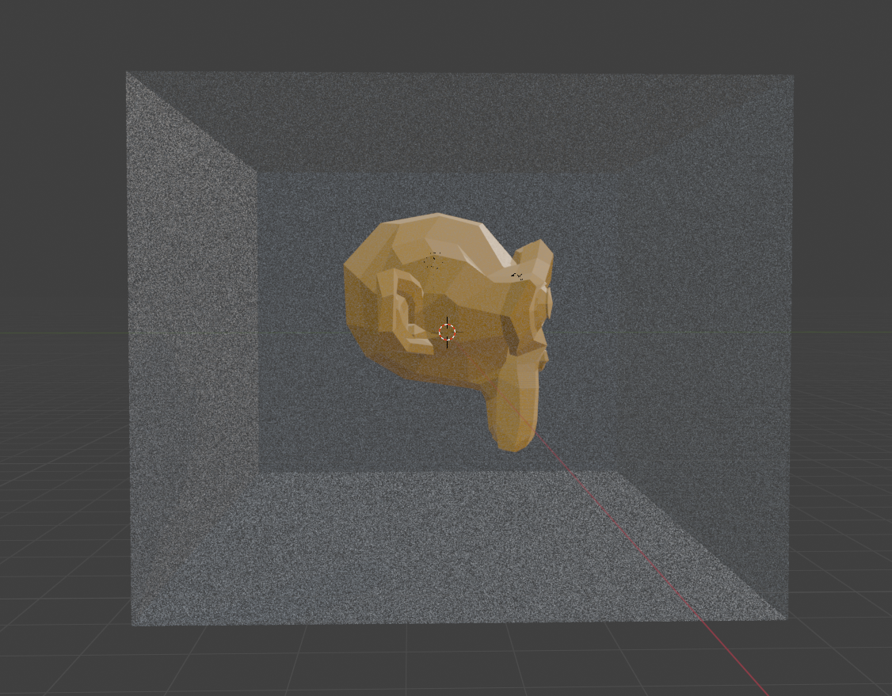
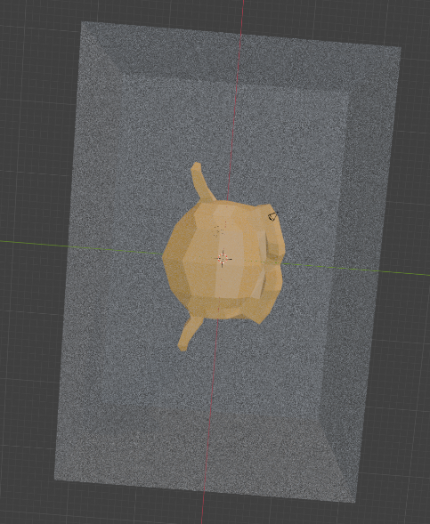
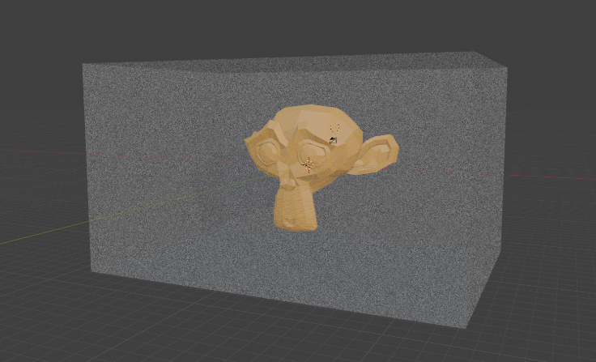

Marching Cubes devlogInserting entities |
Main page |
| Updated: 10/2024 |
In a nutshell, I need a way to use the physics engine to detect if placing a shape, given a certain position and rotation, would overlap with some other physics objects.
I will get straight to the point by giving you the solution I came up with:
This is done by using the algorithm I described in Destruction. I could also use the ray casting available in jolt, like in Selecting entities.
The position of the shape is actually its center of mass. So, I need a way of getting the offset from the center of mass to the “bottom” of the shape. However, I can’t just store it, since rotations would invalidade it. To get around this, I get the bounding box of the shape, and rotate it:
// transform matrix with the rotation
JPH::Mat44 transform = JPH::Mat44::sRotation(rot);
// GetLocalBounds() returns the AABB. transform it with the rotation
JPH::AABox aabox = insertObj->phys_shape->GetLocalBounds().Transformed(transform);Now, we can get the distance from the center of mass to the “bottom” of the shape
float offset = insertObj->phys_shape->GetCenterOfMass().GetY() - aabox.mMin.GetY();By adding this offset to the Y component of the position we want to place it at, the bottom of the shape should be at the level of the floor.
First, translate the rotated aabb since I’m going to need it to check for collision, and also translate the transform (I have no idea what the most efficient way of doing things here is but it should’t matter too much):
// DO NOT DO THIS, READ WHAT IS BELOW
aabox.Translate(pos); // pos.y has been offset by the offset
transform = transform.PreTranslated(pos);Doing this actually “invalidates” the rotation previously applied to the aabox, so for now I do
aabox = aabox.Transformed(transform); // after transform was translatedNow we can check in the broad phase:
Phys::getBroadPhase().CollideAABox(aabb, collector, broadPhaseFilter, objectFilter);And in the narrow phase:
// broad phase collided, so we need to check narrow phase
if (collector.collision) {
CollideShapeSettings collideSettings; // lots of settings here, I use none
MyCollideShapeCollector collisionCollector;
JPH::Vec3 pos = transform.GetTranslation(); // you could just pass the translation vector, whatever
Phys::getNarrowPhase().CollideShape(
shape,
scale,
transform,
collideSettings,
pos,
collisionCollector
);
res = !collisionCollector.collision;
}About that last pos, according to the docs: “All hit
results will be returned relative to this offset, can be zero to get
results in world position, but when you’re testing far from the origin
you get better precision by picking a position that’s closer
e.g. inCenterOfMassTransform.GetTranslation() since floats are most
accurate near the origin”
The filters and the collector were not defined so I wouldn’t bloat everything, but here are some examples:
class MyBroadPhaseFilter : public JPH::BroadPhaseLayerFilter {
public:
virtual bool ShouldCollide(JPH::BroadPhaseLayer inLayer) const override {
// just return true meaning all layers can be checked
return true;
}
};
class MyObjectFilter : public JPH::ObjectLayerFilter {
public:
virtual bool ShouldCollide(JPH::ObjectLayer inLayer) const override {
// just return true meaning all layers can be checked
return true;
}
};
// this one does extra work and should "exit" after a single hit is detected, haven't done that yet
class MyBodyCollector : public CollideShapeBodyCollector {
public:
bool collision = false;
// This function is called for each overlapping body
virtual void AddHit(const BodyID &inBodyID) override {
// a hit was detected
collision = true;
}
};
// same as above but for narrow phase, gets a different thing other than just a BodyID
class MyCollideShapeCollector : public CollideShapeCollector {
public:
bool collision = false;
virtual void AddHit(const CollideShapeResult &inResult) override {
collision = true;
}
};Turns out the bounding box jolt provides is extremely generous. Here it is visualized in blender:
  
Because of this, since I use the bounding box to calculate the height offset, entities are inserted pretty far from the floor.
If this proves to be a problem in the future, I will have to either use an oriented box, make the bounding box manually, or some other solution. For now, I just kept it as-is.